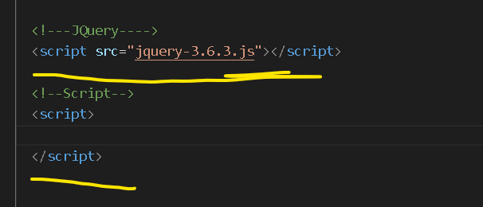

A idéia do JQuery, é ultilizar poucas linhas de código, facilitar a vida .
Para usá-lo, tem que baixar do site ou usar o link do JQuery .
Se for abaixar o arquivo, guarde ele na mesma pasta do seu projeto.
Agora para poder usar o arquivo "jquery-?.?.?", que você baixou.
Para isso, tem que ligar no projeto, e também o "JavaScript".
Como mostra na imagem abaixo:

O JavaScript executa a ação, linha por linha, para executar uma ação usa muito energia.